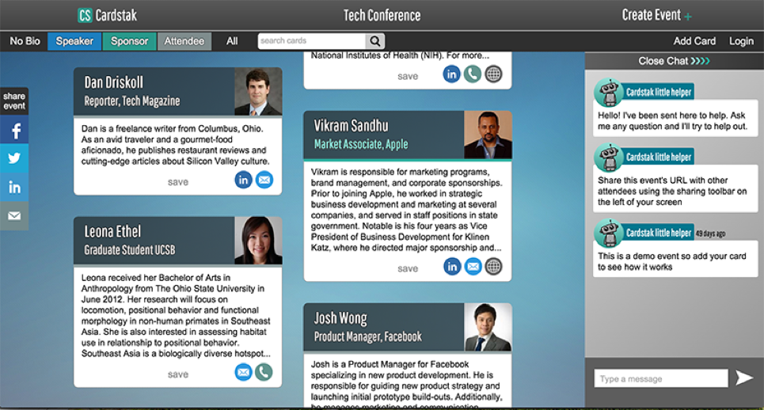

https://github.com/mozadeh/cardstak
https://www.ischool.berkeley.edu/projects/2016/cardstak
Abstract
We meet new people every day - at an event, or in a new class, or for a project. While sometimes we do know in an instant whether we like the person in front of us or not, that usually happens only in movies. Most of the time, we want to get to know them a little bit better. And that in today’s world usually means adding them on Facebook or Linkedin.
However, Facebook and Linkedin are not designed for building relationships with people you’ve just met. There are many times when you want to present only a particular dimension of yourself, without having to expose your entire social network and past history to strangers. At the same time, you do want to be able to interact with them, safely and get to know them better. And this is where people, even today, fall back to exchanging business cards.
CardStak gives the users control over how they present themselves to strangers, while protecting them from unintended consequences of meeting strangers. It gives them the ability to get to know the others and build a relationship, before deciding how to proceed with connecting on a deeper level.
Achievements
Cardstak.com, was used by Berkeley Haas School of Business, School of Engineering and the School of Information
Sample event: Berkeley Master of Engineering Alumni event
Sample event: Berkeley New Admit Day (scroll to bottom left of page).
It was also awarded the James Chen Award (the highest award presented by UC Berkeley school of Information)
The Problem
Whether it is for personal growth or professional, meeting new people regularly is almost a necessity in today’s life. Various studies have shown the benefits of meeting new people and how that shapes our lives. Some studies put the number of people who got their jobs through networking as high as even 80%! And it’s not just about finding a job, people who have a stronger network can hire faster, attach more clients (hence generate more sales) and are more likely to get promotions (as high as 95% more likely) within a company. As such various products, channels and organizations have sprung up in order to help people network better - both offline and online.
However, the current digital tools that allow us to share our information with people we have just met were not designed for that purpose. E.g. Facebook was designed for you to connect with your friends (and later, brands), while Linkedin was designed for you to connect with people you knew professionally. Both of them, while great at what they were designed to do, now have a lot of information (our existing networks, historical information, etc.) which we do not always want to share with people we have just met.
To address this new tussle between their desire to network and their desire to protect their privacy, people now usually are forced to adopt some version of the following options:
-
Choosing networking over privacy: These people add (or accept requests from) everybody they meet - even absolute strangers. They give up on trying to maintain their privacy on these social networking sites. Instead, they curate what they present online, so that they can protect their privacy while at the same time enjoy the benefits of trying to build a relationship with their acquaintances. These people accept the dilution of the quality of their network as collateral damage, and sacrifice quality of the relationships for quantity.
-
Choosing privacy over networking: These people do not add or accept requests from people they do not know well. They usually lock down their social profiles, and prefer to exchange business cards as a means of building a connection. They then connect with people over email or other medium first, and get to know them better. However, this leads to far fewer relationships being built, because the convenient affordances of social networking sites are lost in this case. Thus, they sacrifice quantity for quality.
What is worse, even after the users have adopted one of the above choices, they still have not achieved a major part of their goal! After all, their ultimate objective is not just to have a high number of “friends” or “connections”, but to genuinely get to know the new person better! For that to happen, the context in which the people met is important to preserve.
As more of our lives move online to these social networks, it becomes even more critical that we design systems and modalities of interaction that protect our privacy.
Current Solutions
Business Cards
This weapon of choice for generations past is still a critical information exchange tool in today’s world, and even more so for networkers. They give people an easy way to control exactly what information they are sharing with strangers at some event.
While cards allow people to have more control over their privacy, it retains the same old problems that they always had. All the cards that one receives have to be organized and managed, manually and individually. They also do not support any interactions that would allow the people to get to know each other. Instead, both participants in the exchange have to adopt some other common medium of communication for that need of relationship building.
Facebook originated as a way for us to stay in touch with our friends and family, but many people started using it to add their acquaintances. Slowly, at first and more rapidly as time went on, the quality of relationships on the social network site deteriorated. Soon, the number of friends one had became a status symbol and “Facebook users cast aside the much needed skepticism in favor of gaining connection with another seeming admirer”.
But adding that random stranger you just met at a networking event is a danger to yourself and even to your network. Simply by adding that person, you have given them access to personal information such as your date of birth, email addresses, places where you went to school, towns where you lived in and so on. Even more dangerously, it exposes you to information leak. E.g. do you regularly check in on Friday evenings at a popular bar downtown? Or do you comment regularly on a friend’s posts? These are just a couple of examples of things that can add up to a much more complete picture of you, built from small and seemingly inconsequential activity that is shared with your friend circle. Imagine those strangers being able to put together a more complete picture of you using only bits of information that you never thought were important. Even worse, such loose restrictions on who you add as a “friend” on Facebook could even lead to more serious crimes, especially for vulnerable users.
While Linkedin was designed for the professional context, it also suffers from similar problems of personal information exposure and leakage. The only difference is the kind of personal information that is at risk.
People perceive Linkedin requests in one of two ways - either the digital equivalent of handing over a business card, or an endorsement of your professional life. To some, it is a low cost and low barrier transaction meant only as a collection of connections. To others, it is the equivalent of vouching for each other’s professional experience and is thus a high cost and high barrier transaction meant to be protected and guarded against. To them, adding a complete stranger on Linkedin is granting them “carte blanche to your professional network, which they will be able to freely snoop in”. This dichotomy is what makes Linkedin fail as a solution to our problem.
Our Solution
Initially, we had started with the assumption that people would want a simpler public profile that they could use at networking events, instead of their business cards. However, based on our user research and testing, we realized that the problem was much deeper than that - people wanted ways to build relationships, to go from strangers to acquaintances and then to friends or colleagues.
Our solution handles the problem of relationship building on two fronts:
-
CardStak allows people to create multiple mini-profiles that they can use at different events. By allowing each user to create multiple “cards”, we enable them to present a different version of their self according to their needs.
-
CardStak enables people to easily exchange information with people that they have just met, and focus on the interactions rather than the logistics of information exchange. By enabling easier and safer interactions between acquaintances and strangers, and placing it squarely within the narrow context of a single event, CardStak allows them to build a more trusting relationship which can then be moved to the next stage.
User Research
Methods
-
Field Studies: To start off, we attended networking events and observed how people interacted while networking. By closely observing people in these environments, we unearthed the various tools that they currently use as workarounds. These sessions also gave us a lot of raw material for us to inform our user interviews.
-
User Interviews: We conducted 38 in-person interviews in total over a period of 9 months. The breakdown for the interviews was:
-
12 interviews with event planners and organizers
-
24 interviews with event participants
-
-
Surveys: After each event, we sent out a survey to the users asking them for feedback on the product. The survey is attached in the appendix.
We chose a survey was because it was not possible for us to reach all the participants at a particular event. More importantly, the event organizers had some reservations about us approaching a lot of people for feedback at the events themselves.
-
Usability Tests: We did a lot of guerilla usability testing at events, by showing people paper prototypes and asking them to perform certain actions and think aloud while they were doing so. This testing during an event was very valuable for placing the testing in the context in which it would be most used.
Findings
-
People care about building relationships, not “collecting” contacts
We were surprised by the now obvious insight that people actually wanted to build relationships and not just collect cards or have a high number of connections. This, and how none of the current platforms was really ideal for this, was a topic that came up regularly in our interviews.“ I go to these events to network and get ahead. But that doesn’t happen if you don’t have a relationship with the person. Ideally, when you follow up with them later, you want them to remember you from the event. It’s important that they can put a face to the name, and have a few good interactions with you before you make the ask.” Haas MBA student
Implication: Our product should make it easier for people to build relationships, and not be for just contact management
-
There IS no universally accepted form of exchanging contact information with a new acquaintance
People used Linkedin, Business cards, Facebook, handwritten notes, various apps to manage the contact information of the people they met. But everybody was using these products and solutions purely as a data exchange tool. When it comes to taking the relationship forward, they usually resorted to email or messaging.And almost everybody complained about every tool. Agreeing on which tool to use, and on subsequent communication etiquette, was a source of concern for many.
“ I usually email people after an event, but I’m probably forgotten to follow up with someone more than I have remembered. Between my Linkedin, business cards, emails and notes, I probably have lost more contacts than gained.” Job seeking student
Implication: Our application needed to be built on top of existing tools such as email and business cards, and facilitate cross-channel information exchange.
-
People want to know who they are going to meet at an event
People were usually interested to spend at least a few minutes researching the people they would be meeting at the event because they do find it valuable and useful, but it’s either impossible or requires too much time and effort.“ On Eventbrite, I cannot see who else is coming except for my Facebook friends. On Meetup, I can see the attendees, but then to research them I have to search for each one of them on Linkedin. That’s just a pain!” M.Eng student
Implication: Having the profiles of all the attendees at the event is a must have for people especially before the event.
-
The quality of the interactions mattered, but so did the quantity
The more two people interacted, the more they trusted each other. Even if one only just met the person for a few minutes, seeing them again, even at the same event, made them feel familiar. Thus, more interactions between the people increased trust and memorability.“(on being asked how he knew “Ted”, with whom he had just exchanged a high-five as he walked past) I just met him 10 minutes ago. Don’t even know his last name! He’s just a familiar face” MBA student
Implication:The product should allow users to interact easily, and more interactions are crucial to its success.
-
Accuracy of contact information is critical
Some people had heard about CamScanner or other such apps which scan a card and convert it into a contact on the phone. However, most had given up on such apps because their accuracy was not as high as was expected. When it comes to the contact information, one wrong digit or alphabet can break down communications, and thus break your trust in the app.Implication: The product should let people enter their own information, so that they retain complete control over any information they are sharing and any errors in the contact information is minimized.
-
Requiring both parties to have the app in order for it to be useful was a barrier to adoption
We witnessed many interactions where the two parties in an interaction would not have the same app. Rather than asking one person to download a new app, sign up for it and then use it, both of them would move to either exchanging business cards or add each other on some social networking site, which was usually a poorer but easier option for both.Implication: The product should work without needing anybody to download any app. Once they have invested some time into the application, they could then be persuaded to download the app for a better experience.
Design
CardStak Version 1
CardStak Version 2
CardStak Version 3

CardStak Version 4
CardStak Version 5
User Personas
Christopher Consultant
-
Age: 27
-
Gender: Male
-
Education: Bachelors in CS, from Columbia
-
Work experience: 4 years, in tech consulting
-
Hobbies: He is a NY Giants fan, and catches every single game at a local sports bar.
-
Reads: BusinessWeek, WSJ, Techcrunch, Wired
-
Background: “Chris” has a steady girlfriend. Now that his personal life is more or less settled, he has been focusing more on getting more out of his work, even though has had decent professional growth so far. He works in a mid-size consulting firm, where he works on projects that are typically less than 2 months. He meets new clients and colleagues for a new project, and on average he does not know 60% of the people he is working with. He does not have a tech background, but follows popular technology blogs to keep up to date, because it sometimes comes in handy with his consulting. He really likes Wash.io because he hates having to take his suits to dry cleaners and then pick it up.
He doesn’t have direct decision making power over the tools that his company uses, but he is capable of influencing the decision makers.
-
Motivation: He is a particularly driven person, and wants to be the youngest person to be made a partner at his firm. For this, he wants to have more successful projects, but also wants to establish better relationships with everybody he works with.
He feels his team would be more effective if they got to know each other a bit better. It usually takes 2 to 3 weeks to get to know the people he is working with, and by the time he gets to know everybody involved, the project is almost over.
Rachel Recruiter
-
Age: 36
-
Gender: Female
-
Education: Masters in English
-
Work experience: 4 years as a recruiter with a large tech company, now an independent recruiter (freelance)
-
Hobbies: She doesn’t get much time from her 2 kids (7 and 3), but she does love looking at Pinterest for interior decoration stuff. She is also an occasional at a local recruiters meetup group.
-
Reads: Techcrunch and AngelList (to find out which companies she should keep an eye on), the Muse.
-
Background: Her husband works as an accountant at mid-sized startup. She has 2 kids (7 and 3) whom she love dearly. She has a happy family life.
She is a freelance recruiter now, after having worked for 4 years as a recruiter for Salesforce. Now she has her own recruiting agency, and now gets paid 5k to 10k USD for a successful placement. She spends a significant amount of time going to or organizing professional networking events, in the hopes of finding candidates for her to recruit for her clients. She wastes a lot of time at these events talking to people who aren’t interested in jobs. She is looking for easier ways to better qualify the people she speaks to at these events.
-
Motivation: She wants to spend more time with her kids, while still making her independent recruiting firm more successful. She wants to be more efficient at her work, so she can spend more time at home. Better efficiency would also lead to more money for her, which is definitely an important secondary motivator.
Joe Job-seeker
-
Age: 28
-
Gender: Male
-
Education: MBA 2nd year student - at a top 15 University
-
Work experience: Worked for Financial Analyst for a top tier Consumer Packaged Goods company (Kraft foods) for 5 years.
-
Hobbies:Music festivals (he’s been a regular at Coachella for the last 3 years), and fast cars (he loves Top Gear)
-
Reads: CNN, New York Times, WSJ
-
Background: He majored in economics from USC, with above average grades. He is good at building relationships and people usually like him. He is not super-alpha, but is at the same time ambitious.
He is interested in going to Investment Banking because he sees his old friends making a lot more money in that industry. This is why he went back to B-school.
He realizes that his grades are not the best, but he wants to leverage his likeability and networking skills to land opportunities in the firms he is interested in. This is why he goes to all the networking events organized by his b-school. He tries to prepare for each event by researching the people attending, when he has the time.
-
Motivation: He wants to make much more money than he was earlier and more exciting, lavish life.
Callie CareerServices
-
Age: 31
-
Gender: Female
-
Education: University of Arizona, Masters in Psychology
-
Work experience: 43 years as a career counsellor. 2 years at career services at her alma mater. Now 4 years in UCSF. She recently moved to a small school in UCSF as the Director of Career services.
She co-founded the UCSF Facilitators Network - a community of practice in the area of facilitation to teach skills and provide a supportive learning environment for UCSF staff.
-
Hobbies: Likes popular Netflix series. She used to like hiking, but with the kid she hasnt had the time to do so in the last year or so.
-
Reads: Career management blogs - she follows some popular influencers in her field on Linkedin and Medium.com
-
Background: She loves her family, and moved to California when her husband moved for a new job. She has a 1 year old kid who is the pride of her life.
-
Motivation: She loves working with students, and helping them achieve their highest potential. She loves her job, and is quite driven in her quest to help her students get the best jobs. She organizes a lot of networking events, career fairs and resume workshops. She maintains good relationships with recruiters of various companies, and tries to connect the right students with the right companies.
Praveen Premium
-
Age: 30
-
Gender: Male
-
Education: UC Berkeley
-
Work experience: 6 years as a software developer at Google, and now is an engineering manager at CourseHero (they hired him after their Series A) for the last 2 years.
-
Hobbies: Likes playing around with new technology - 3d printing, laser cutting, etc - and is an actgive member of the Maker community.
-
Reads: Follows HackerNews religiously. And reads a few select people’s blogs who write about deep technology issues.
-
Background:He is introverted fellow, although he is becoming better at managing public speaking over the last few years.
Joined Google straight out of college. Liked his time there, but joined AirBnb because he wanted different kind of challenges - especially in growing an engineering team.
His company sends him to recruiting events (career fairs / info sessions) for recruiting engineers to his team. He is also requested to be a part of panels at his alma mater sometimes.
Used to be active on StackOverflow - has earned lots of privileges over the years. He isn’t very active on StackOverflow now because of lack of time.
-
Motivation: He really wants to grow his engineering team, and get the best people for it. But the best way to do that, is to meet new graduates and present his engineering challenges to them. So although he doesn’t like it very much, going to career fairs and other recruiting events is an important part of his job. Sometimes, he gets overwhelmed by all the people trying to talk to him.
He wants to be early adopter of deep technologies, but doesn’t consider yet another app to be exciting technology. At the same time, he doesn’t want to be left out of his peer group.
Data Model
An aggregate of 13 tables have been created and capture all the relevant information for users, events and activities. The main three tables are show below and the full description and column for each of the 13 tables have also been provided.
System Architecture